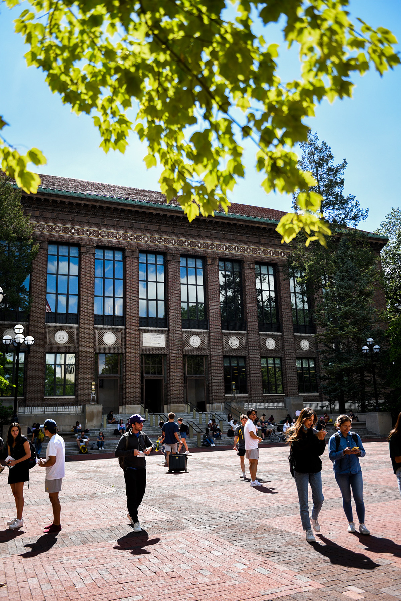

Student Life
Student Life's mission is to enrich the experience of each student while fostering an inclusive and welcoming community. We are dedicated to enhancing students' educational journeys through programs, services, and opportunities that build skills and create a positive, accessible environment from orientation to graduation. Focusing on various aspects of the student experience, Student Life aims to engage every student across academic programs through the pillars of student leadership, community, well-being, and campus life.
Get Involved
This guide to advising and academic resources is available to all University of Michigan undergraduates, designed to support your educational path and help you achieve your academic goals.
- Center for Campus Involvement
- U of M Student Organizations
- U of M Student Life
- U of M Events Calendar
- Intramural Sports
Center for Campus Involvement (CCI)
Center for Campus Involvement (CCI) at the University of Michigan serves as a comprehensive resource for students seeking to engage with campus life. Check this source out for information on a variety of student organizations, leadership opportunities, events, and programs designed to enhance the student experience.
Upcoming Events
The upcoming events page linked above on the CCI website at the University of Michigan lists student events happening on campus. It includes details like date, time, location, and a short description of each event, making it easy for you to find activities that you may be interested in attending.
Reserve a Space
If you're interested in reserving a space for an event at the University of Michigan, the reserve a space page on the CCI website is your go-to resource. It offers details on how to book campus spaces, provides information about available venues, and outlines any required forms or approvals. This is an easy page for you and your organizations to find and secure the ideal location for your events or meetings.
Address
Michigan Union
530 S. State Street
Suite 3410
Ann Arbor, MI, 48109
Hours
Monday - Friday: 8am - 5pm
U of M Student Organizations
Also through the CCI, the Student Orgs page offers resources and information for student organizations. It helps students explore various clubs and groups, connect with peers who share similar interests, and access tools for starting or managing an organization. The page serves as a central hub for involvement opportunities, making it easy for students to actively participate in campus life.
You can create an organization, join, lead, or advise an organization through this site.

U of M Student Life
The University of Michigan's Student Life is dedicated to enriching the student experience by providing a wide range of programs, services, and resources. From housing and dining to health and wellness, Student Life supports students in their academic and personal growth. It encourages involvement, leadership development, and community engagement, helping students make the most of their time on campus.
About Student Life
An overview of the various departments and initiatives that support students' well-being and success. It covers areas such as housing, dining, health services, career development, and student activities, offering links and information on each to help you navigate university resources and enhance your campus experience.
Student Life Leadership introduces a variety of opportunities for students to develop their leadership skills. It outlines programs and workshops aimed at fostering personal growth and encouraging active campus involvement, serving as a guide for students eager to enhance their leadership abilities and contribute positively to the university community.
Mission, Work, Values, and Priorities
The Mission, Core Work, and Values page outlines the foundational principles that guide its efforts to support students. This page details Student Life's commitment to fostering an inclusive and engaging campus environment, highlighting its mission to enhance student experiences, promote well-being, and encourage personal and academic growth through its core work and values.
Find Community
The Find Community page helps students discover ways to connect with peers and build a sense of belonging on campus. It offers resources and information about student organizations, cultural and identity-based groups, and various programs that encourage community involvement. This page serves as a gateway for students to explore diverse opportunities to engage with the university community and make meaningful connections.
Parents & Families
The Parents & Families page on the University of Michigan's Student Life website is a dedicated resource for the families of U-M students. It provides essential information and guidance to help parents and guardians support their students' college journey. From understanding campus resources to staying informed about events and news, this page is designed to foster a strong partnership between families and the university, ensuring students thrive both academically and personally.
U of M Events Calendar
Check out a comprehensive listing of upcoming events on campus, offering a convenient way for students, faculty, staff, and visitors to stay informed about university happenings. The calendar features a wide range of events, including lectures, workshops, cultural performances, sports activities, and social gatherings. Each event listing typically includes details such as the date, time, location, and a brief description, allowing users to easily find events that match their interests and schedules. This centralized resource helps the U-M community engage with the vibrant campus life and make the most of the diverse opportunities available at the university.
Intramural Sports
If you're interested in sports and physical activity on campus, the Intramural Sports website is your go-to spot for getting involved with or in fun, competitive sports on campus. Whether you're into basketball, soccer, volleyball, or flag football, you can join or create teams and compete with fellow students. It's a perfect way to stay active, meet new people, and experience teamwork and sportsmanship while enjoying your time at U-M.
Intramural sports will be offered in a variety of leagues varied on the size of sport and demand. The new devision breakdown allows participants or students to chose the sport within the competitive level that best fits their needs.
Competitive League
Our top level of competition for players and teams seeking high-level games. You should expect to face others with similar skills or experience. All teams can qualify for playoffs and compete for a championship.
Recreational League
Our standard competition level, blending social and competitive elements. Skill levels vary from beginner to experienced, focusing on enjoying the game and socializing. All teams can enter playoffs and compete for a championship.
Social League
For those new to the sport or who want to play just for fun, without focusing on winning. It's all about making friends, having fun, and improving social and physical well-being. Note that there's no playoffs or championship, but you get a longer regular season. Social divisions aren't available in Victors' seasons, and teams may have free agents added if they don't have enough subs.